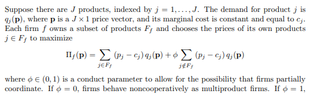
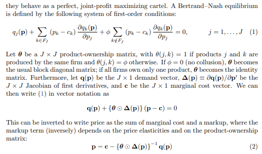
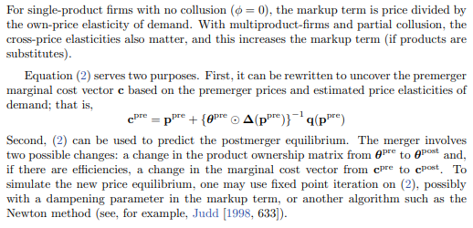

What is Merger Simulation?
The next pages presents examples of horizontal merger simulation implemented in R code.
Merger simulation is a quantitative tool to create prediction about the probable outcome effect of a merger on competition. The process can be divided to three parts:
(1) Selection of a structural model of supply and demand.
(2) Calibration model’s parameters.
(3) Computation of new equilibrium that will prevail post merger.
Next, I’ll briefly describe the selected three parts chosen for the forthcoming examples. Afterwards, a brief view of the equation system that emerge from the model, and finally, a few references for those who’d like to deepen their knowledge in the subject.
(1) The structural model
On the supply side we’ll use a Bertrand model with differentiated products. On the demand side versions of logit demand systems will be used. This specification is common for competition agencies to work with.
(2) model calibration
Two techniques are common, the harder one is implementing demand estimation of the demand function parameters. It is a demanding process both in terms of the required data and in terms of the required scope of work. Another approach is to calibrate the model using carefully selected parameters - this is what we’ll do here.
(3) Equilibrium computation
In the case of a non-linear demand system such as we have here, no analytic solution exists. Some kind of numeric method is required to solve the equation system - here I’ll use fixed point iteration.
Equation system of the structural model
Next, we explain a little bit about the chosen structural model. first, the equations of the Bertrand model followed by the simple logit demand system.
Bertrand model with differentiated products
A very good explanation of how the betrand model works is written by Jonas Björnerstedt (Swedish competition authority) and Frank Verboven (University of Leuven) in their merger simulation implementation in stata. The next few images are taken from section 2 of their paper:



The multinomial logit model
Logit demand is based on a discrete choice model that assumes that each consumer is willing to purchase at most a single unit of one product from the \(n\) products available in the market. The assumptions underlying Logit demand imply that the probability that a consumer purchases product \(j \in n\) is given by
where \(s_j\) is product \(j\)’s quantity share and \(V_j\) is the (average) indirect utility that a consumer receives from purchasing product \(j\). We assume that \(V_j\) takes on the following form:
The Logit demand system yields the following own- and cross-price elasticities:
Nested logit model
the nested logit is a generalization of the multinomial model…. still need to sum it up.
Usefull references
For more information about the mathematical implementation and the theory, one can read
Björnerstedt and Verboven
To understand more about the Logit demand system (multinumial and nested logit) and the implementation is this repository its best to read berry 1994.
To get a wider perspective about possible implementations for antitrust practitioners, see the work of Taragin and Sandfort
and finally, a very good source to understand the procedure of demant estimaion, a good place to start is Aviv nevo’s practitioner’s Guide